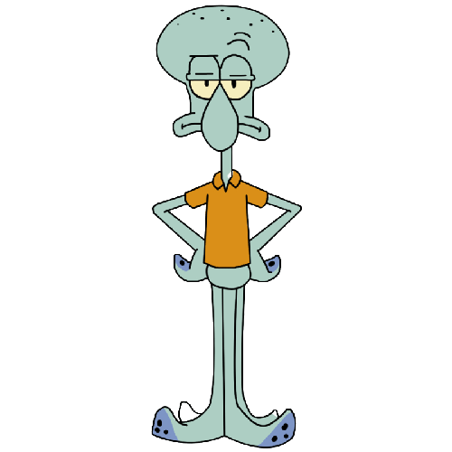

CALAMARDO

Es el vecino amargado de Bob Esponja y Patricio; toca el clarinete y odia casi todo a su alrededor y es un Pulpo a pesar de que su nombre de la impresión de que es un Calamar. Su rival, Calamarino Elegante, es el centro de atención, cosa que Calamardo nunca pudo lograr. A pesar de que si se esfuerza en ser un gran artista ningún habitante de Fondo de Bikini no lo toman en serio y se burlan de él sin razón alguna. Es junto con Arenita y Plankton el tercer personaje más inteligente de la serie.
Regresar